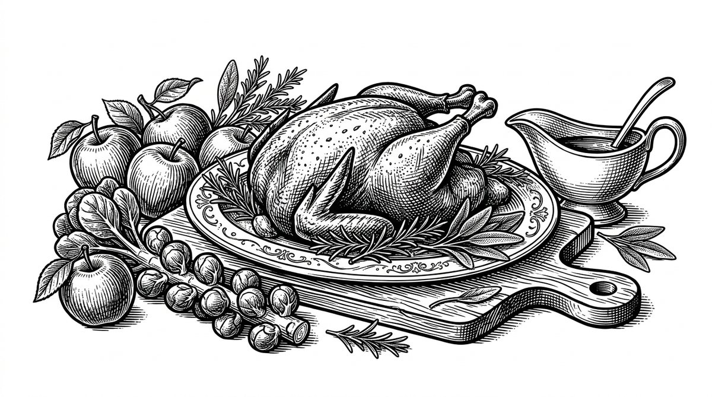

Special Culinary Edition · Dinner at Four Sharp
Precision Turkey, Calm Oven, Hot Table at 4:00 P.M.
A 75-minute Wednesday evening head start clears Thanksgiving morning completely. The sous vide handles the 3-lb half turkey breast hands-free while dessert bakes early—leaving every appliance choreographed to land hot together at 4:00 PM.
Wed Prep
~75 min
Snacks Out
2:00 PM
Dinner Bell
4:00 PM
